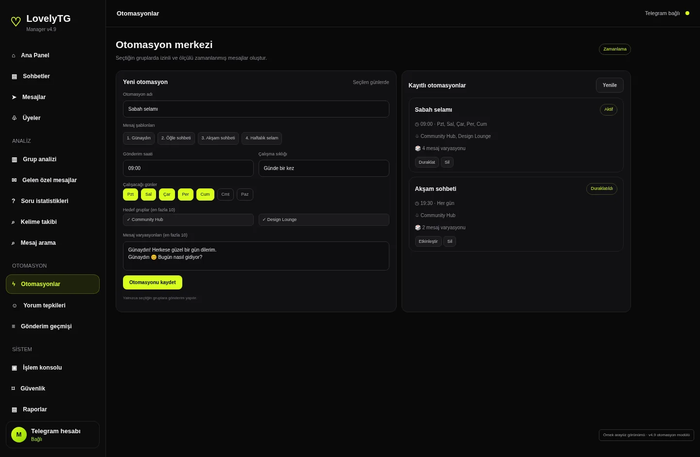
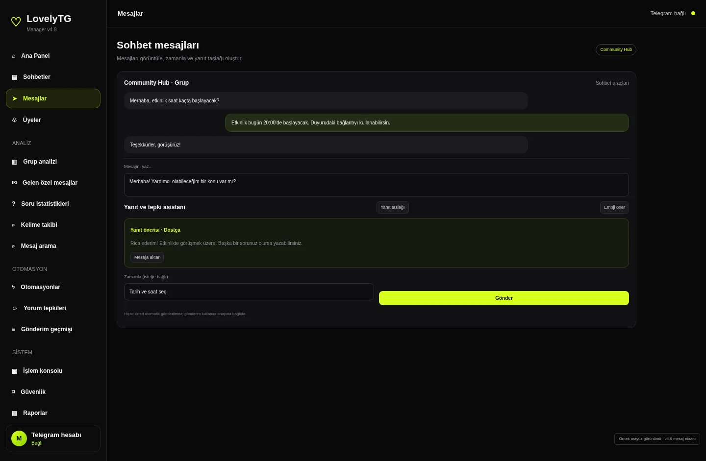
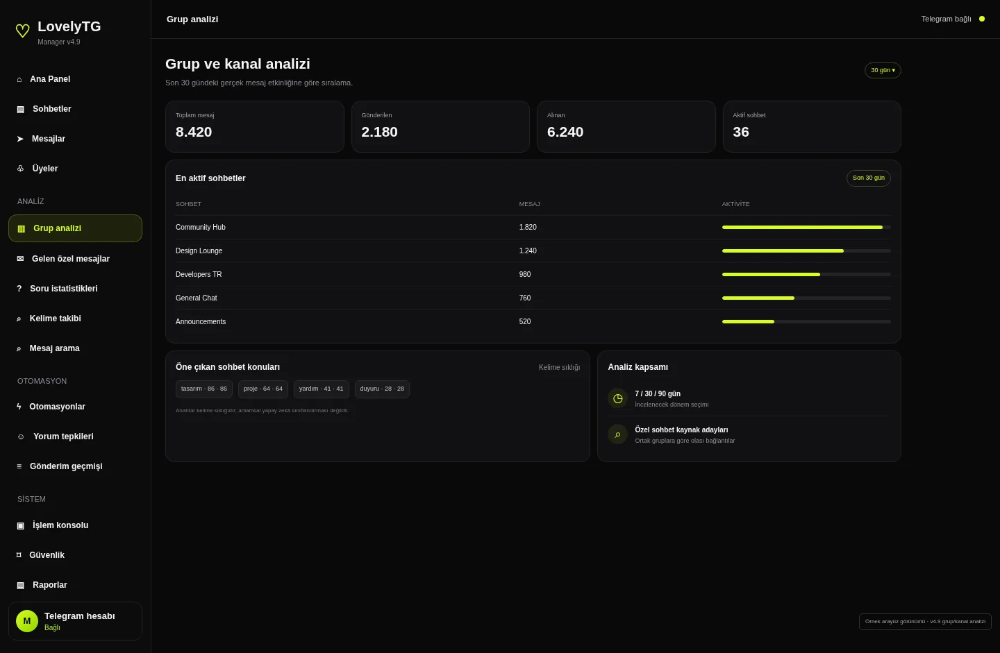

Telegram yönetiminde daha fazla kontrol.
Sohbetlerini, grup analizlerini ve zamanlanmış görevlerini tek bir sade panelde topla. İş akışını düzenle; önemli adımlarda kontrol sende kalsın.

İhtiyacın olan araçlar.
Gereksiz karmaşa olmadan.
LovelyTG, Telegram iş akışını tek noktadan takip edebilmen için tasarlandı. Sohbetlerden raporlara, otomasyonlardan güvenlik kontrollerine kadar temel araçlar bir arada.



Tek panel.
Net bir çalışma akışı.
Her modülün amacı belli. İhtiyacın olan alana geç, veriyi incele ve işini tamamla.
Otomasyon güçlüdür.
Kontrol daha önemlidir.
LovelyTG, kontrolsüz gönderim yerine görünürlük, kayıt ve gerektiğinde durdurabilme yaklaşımını benimser.
- Hesap bazlı sınırlarHesaplar ortak bir gönderim havuzuna dönüşmez.
- FloodWait'e saygıTelegram bekleme istediğinde sistem bekler.
- Belirsiz işlem tekrarlanmazSonucu net olmayan işlem kontrol için bekletilir.
- Taslaklar senin onayındaYanıt önerileri otomatik olarak gönderilmez.
- Sabah duyurusuÇalışıyor
- Haftalık raporÇalışıyor
- Grup anketiÇalışıyor
Örnek kontrol alanı · Tek tuşla duraklatma
Şeffaf ürün gelişimi.
Kullanımda olan modüllerle geliştirme aşamasındaki alanları birbirinden ayırıyoruz.
| Modül | Durum |
|---|
Sana uygun planı seç.
İhtiyacına göre lisans süresini belirle. Fiyatlar ve ödeme bilgileri yayına almadan önce yapılandırılmalıdır.
Ödeme ve lisans talebi.
Paketi seç, talep metnini hazırla ve ödeme bilgilerini kullan. Ödeme kontrolü ve lisans tanımlama manuel yürütülür.
- Hesap sahibi
- IBAN
- Ağ
- Cüzdan adresi
Transferden önce ağ ve adresi mutlaka doğrula.
Merak edilenler.
Lisans nasıl etkinleşir?
Ödeme ve dekont kontrol edildikten sonra lisans anahtarı oluşturulup iletilir. Süreç şu an manuel yürür.
AI özellikleri için ne gerekir?
Kendi AI sağlayıcı API anahtarın gerekir. AI destekli çıktılar taslak ve öneri niteliğindedir.
Sınırsız gönderim yapabilir miyim?
Hayır. Telegram kuralları ve hesap limitleri geçerlidir.
Verilerim nerede saklanır?
Oturumlar ve veritabanı, panelin çalıştığı cihazda tutulur. Yedeklerini ayrıca saklamalısın.
Bir fikrin mi var?
Konuşalım.
LovelyTG ve diğer yazılım projeleri hakkında iletişime geçebilirsin.